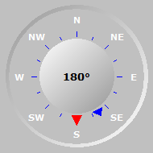

| Amanecer: | <#dawn> | salida del Sol: | <#sunrise> | Salida de la luna:: | <#moonrise> | |
| Anochecer: | <#dusk> | Puesta del sol: | <#sunset> | Puesta de la luna: | <#moonset> | |
| Daylight: | <#daylightlength> | Day length: | <#daylength> | Face Lunar: | <#moonphase> |
| Temperatura y humedad | |||
| Temperatura interior | <#intemp> <#tempunit> | Temperature esterior | <#temp> <#tempunit> |
| Punto de rocio | <#dew> <#tempunit> | Escalofrios | <#wchill> <#tempunit> |
| Huedad interior | <#inhum>% | Humedad exterior | <#hum>% |
| Indice de calor | <#heatindex> <#tempunit> | Temperatura aparente | <#apptemp> <#tempunit> |
| Radiación solar | <#SolarRad> W/m² | Evapotranspiración hoy | <#ET> <#rainunit> |
| Lluvia | |||
| hoy | <#rfall> <#rainunit> | Rainfall Rate | <#rrate> <#rainunit>/hr |
| Este mes | <#rmonth> <#rainunit> | Este año | <#ryear> <#rainunit> |
| Ultima hora | <#rhour> <#rainunit> | Últimas lluvias | <#LastRainTipISO> |
| Viento | |||
| Velocidad (ráfaga) | <#wgust> <#windunit> | Velocidad (promedio) | <#wspeed> <#windunit> |
| Dirección | <#avgbearing>° <#wdir> | Beaufort <#beaufort> | <#beaudesc> |
| Presión | |||
| Barometer | <#press> <#pressunit> | <#presstrend> | <#presstrendval> <#pressunit>/hr |
| Temperatura y humedad | ||
| Temperatura más alta | <#tempTH> <#tempunit> | a las <#TtempTH> |
| Temperatura más baja | <#tempTL> <#tempunit> | a las <#TtempTL> |
| Rango de temperatura | <#temprange> <#tempunit> | |
| Temperatura aparente más alta | <#apptempTH> <#tempunit> | a las <#TapptempTH> |
| Temperatura aparente más baja | <#apptempTL> <#tempunit> | at <#TapptempTL> |
| Low Wind Chill | <#wchillTL> <#tempunit> | at <#TwchillTL> |
| High Heat Index | <#heatindexTH> <#tempunit> | at <#TheatindexTH> |
| Humedad más alta | <#humTH> % | a las <#ThumTH> |
| Humedad más baja | <#humTL> % | a las <#ThumTL> |
| Hours of Sunshine | <#SunshineHours> | |
| Lluvia | ||
| Lluvia de hoy | <#rfall> <#rainunit> | |
| Tasa de lluvia máxima | <#rrateTM> <#rainunit>/hr | a las <#TrrateTM> |
| High Hourly Rainfall | <#hourlyrainTH> <#rainunit> | a las <#ThourlyrainTH> |
| Días desde el último día seco | <#ConsecutiveRainDays> | |
| Días desde que llovió por última vez | <#ConsecutiveDryDays> | |
| Viento | ||
| Highest Gust | <#wgustTM> <#windunit> | a las <#TwgustTM> |
| Velocidad máxima (promedio de 10 minutos) | <#windTM> <#windunit> (<#Tbeaufort>) | a las <#TwindTM> |
| Carrera de viento | <#windrun> <#windrununit> | |
| Dirección dominante | <#domwindbearing>° <#domwinddir> | |
| Presión | ||
| Presión más alta (SL) | <#pressTH> <#pressunit> | a las <#TpressTH> |
| Presión más baja(SL) | <#pressTL> <#pressunit> | a las <#TpressTL> |
| Temperatura y humedad | ||
| Temperatura más alta | <#tempYH> <#tempunit> | a las <#TtempYH> |
| Temperatura más baja | <#tempYL> <#tempunit> | a las <#TtempYL> |
| Rango de temperatura | <#temprangeY> <#tempunit> | |
| Temperatura aparente más alta | <#apptempYH> <#tempunit> | a las <#TapptempYH> |
| Temperatura aparente más baja | <#apptempYL> <#tempunit> | a las <#TapptempYL> |
| Low Wind Chill | <#wchillYL> <#tempunit> | at <#TwchillYL> |
| High Heat Index | <#heatindexYH> <#tempunit> | at <#TheatindexYH> |
| Humedad más alta | <#humYH> % | a las <#ThumYH> |
| Humedad más baja | <#humYL> % | at <#ThumYL> |
| Hours of Sunshine | <#YSunshineHours> | |
| Lluvia | ||
| Lluvia de ayer | <#rfallY> <#rainunit> | |
| Tasa de lluvia maxima | <#rrateYM> <#rainunit>/hr | a las <#TrrateYM> |
| High Hourly Rainfall | <#hourlyrainYH> <#rainunit> | a las <#ThourlyrainYH> |
| Viento | ||
| Highest Gust | <#wgustYM> <#windunit> | at <#TwgustYM> |
| Velocidad máxima (promedio de 10 minutos) | <#windYM> <#windunit> (<#Ybeaufort>) | a las <#TwindYM> |
| Carrera de viento | <#windrunY> <#windrununit> | |
| Dirección dominante | <#domwindbearingY>° <#domwinddirY> | |
| Presión | ||
| Presión más alta (SL) | <#pressYH> <#pressunit> | a las <#TpressYH> |
| Presión más baja (SL) | <#pressYL> <#pressunit> | a las <#TpressYL> |
Temperatura exterior |
Wind Chill |
Heat Index |
small |
small |
small |
Punto de rocío |
Humedad exterior |
Lluvia de hoy |
small |
small |
small |
Temperatura interior |
Humedad interior |
Base de la nube |
small |
small |
|
Barómetro |
Viento |
|
analog |
Viento |
|
| Dirección del Viento | Velocidad del viento | Distribución del viento |
|  | ||
| Current heading: <#bearing>° | ||
| 10 Min Avg: <#avgbearing>° (<#wdir>) |
(upto last 3600 readings)